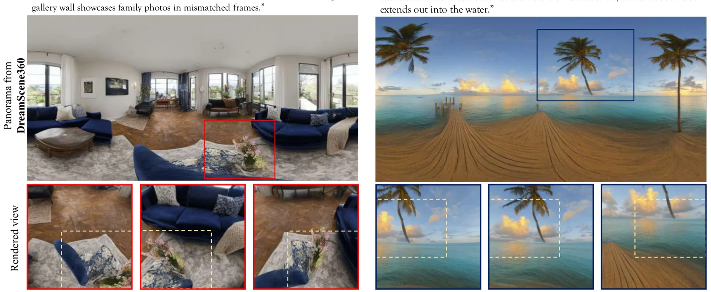
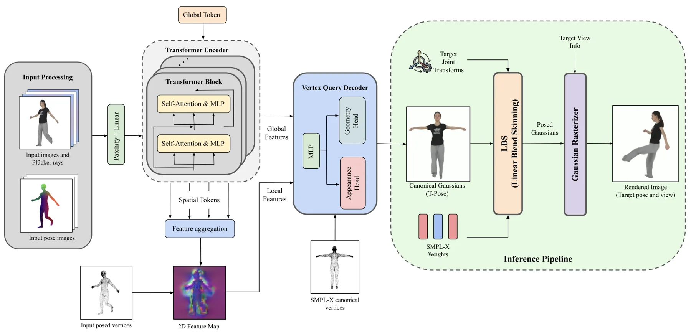
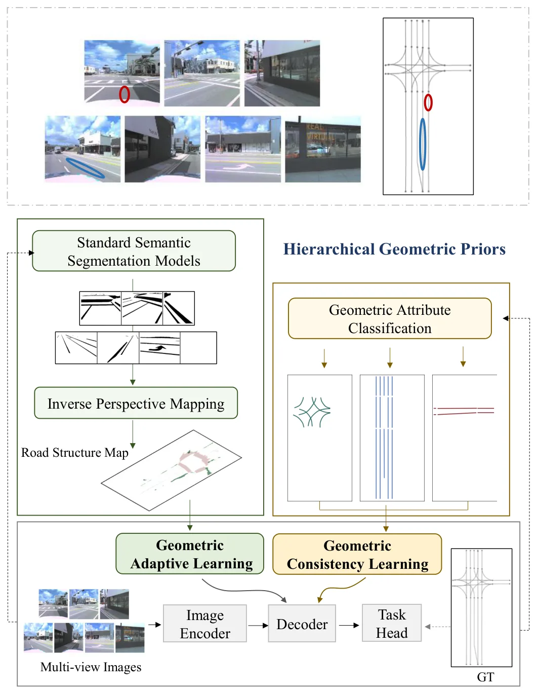
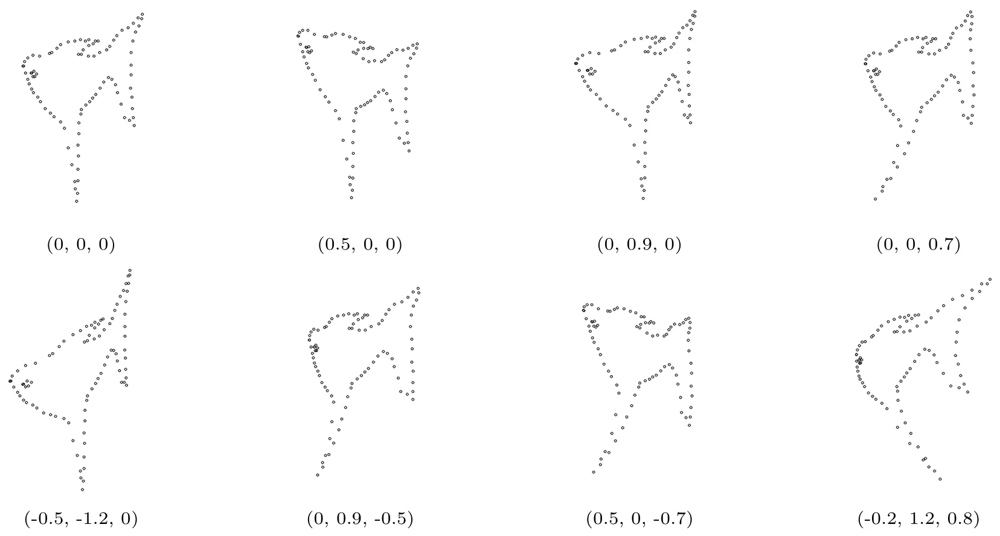
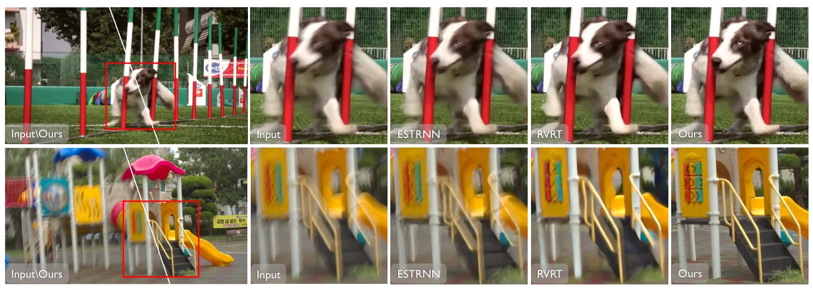

新论文 · 日期 2026-07-24 · score 12 · cs.GR, cs.AI
作者：Zhenyu Sun, Xiaohan Zhang, Qi Liu, Huan Wang
评分 8.8/10
3DGS文本到三维点轨迹深度估计几何一致性
一句话工作总结：结合多视图生成、点轨迹深度初始化和互信息深度损失，改善第一视角文本到 3DGS 的几何一致性。
CGGS 是面向第一视角文本驱动三维场景生成的框架，针对有限视角重叠造成的内容不一致与几何畸变。Ego-centric Generator 以一致性增强损失微调多视图 latent diffusion model，生成与文本对齐的二维内容；Layout Decorator 结合 optical flow 和 point-track correspondence 估计深度并形成稠密点云粗布局；Geometric Re…
Challenges remain in ego-centric 3D scene generation due to limited view overlap and the dominant influence of individual perspectives on scene interpretation. These factors hinder the creation of viewpoint-co…

新论文 · 日期 2026-07-24 · score 12 · cs.CV, cs.GR
作者：Devdoot Chatterjee, Zakaria Laskar, C. V. Jawahar
评分 8.1/10
3DGS前馈重建稀疏多视图SMPL-X实时动画
一句话工作总结：以 SMPL-X 几何反投影聚合稀疏多视图特征，一次生成可实时动画的 canonical 3D Gaussians。
HumanGS 从稀疏多视图 RGB 和对应 SMPL-X pose 前馈生成可动画的人体 3D Gaussian representation。简单 Transformer 通过 geometric back-projection 显式关联 SMPL-X 顶点和多尺度图像特征，轻量 MLP 将聚合特征映射为 canonical Gaussian primitives：一个高斯受约束靠近人体表面，其余自由高斯表达服…
We present HumanGS, a generalizable feed-forward Gaussian splatting framework for human 3D reconstruction and real-time animation from sparse multi-view RGB images and their associated SMPL-X poses. Unlike pri…
新论文 · 日期 2026-07-24 · score 10 · cs.CV, cs.GR
作者：Xuening Tian, Dieter Schmalstieg, Shohei Mori
评分 9.1/10
3DGS三维修补PatchMatch多视图一致性场景编辑
一句话工作总结：用单参考视图生成式修补与 3D-aware PatchMatch 传播纹理，降低 3DGS 编辑中的多视图漂移。
3D-GIMP 面向 3D Gaussian Splatting 中的高保真物体移除，解决逐视图 diffusion 计算昂贵、细节模糊以及 hallucination drift 导致多视图结构不一致的问题。方法仅在关键参考视图执行一次生成式 inpainting，把结果作为外观先验，再通过 3D-aware PatchMatch 和对应匹配将参考纹理传播到其他视图，从而避开逐帧随机生成。摘要报告其修补质量与多视…
Recent advances in 3D scene editing have leveraged iterative diffusion models to update input views. However, this process is computationally expensive and struggles to produce sharp details. Meanwhile, ``hall…

新论文 · 日期 2026-07-24 · score 10 · cs.CV, cs.RO, eess.IV
作者：Siyu Li, Kunyu Peng, Di Wen, Beiping Hou, Zhiyong Li, Kailun Yang
评分 7.9/10
拓扑建图自动驾驶道路中心线几何先验OpenLane-V2
一句话工作总结：融合 IPM 道路先验、掩码注意力和中心线方向一致性，增强自动驾驶矢量化拓扑地图感知。
HGeo-TopoMap 面向自动驾驶中的道路拓扑地图感知，利用显式 prior map 与隐式空间关系改进缺少清晰标线的中心线检测。Geometric adaptive learning module 对 inverse perspective mapping 得到的道路结构图离散编码语义与空间特征，并以 prior-mask attention 聚焦有效区域；geometric consistency lear…
Topological maps are key outputs of autonomous driving perception systems, delivering essential road information for path planning. They identify instances such as centerlines and traffic signs, along with the…

新论文 · 日期 2026-07-24 · score 9 · eess.IV, cs.NA, math.NA, math.RA
作者：Wei Feng, Tengda Wei, Haiyong Zheng
评分 8.6/10
点集配准ICP非刚性配准Taylor 展开拟牛顿优化
一句话工作总结：以截断 Taylor 基构造显式低复杂度形变空间，在 ICP 中统一刚性、仿射与非刚性点集配准。
本文以向量值函数的多元 Taylor 展开构造非刚性点集配准模型。截断基项张成低复杂度、显式的结构化函数空间，并用 quasi-Newton 优化把 identity map 逐步提升为高阶解析映射；该形式在同一闭式框架中统一刚性、仿射和非线性形变，不依赖 kernel 或高维参数化。将其嵌入默认采用最近邻对应的标准 ICP loop 后得到 Analytic-ICP。摘要报告 quasi-linear 时间复杂度…
We present an analytic approximation model for non-rigid point set registration, grounded in the multivariate Taylor expansion of vector-valued functions. By exploiting the algebraic structure of Taylor expans…

新论文 · 日期 2026-07-24 · score 7 · cs.CV, cs.AI
作者：Renbiao Jin, Mingxin Yang, Yutian Chen, Junhao Zhuang, Xin Cai, Mulin Yu, Linning Xu, Wenxian Yu, Danping Zou, Shi Guo, Tianfan Xue
评分 7.7/10
视频去模糊一步扩散3DGS 合成三维重建运动模糊
一句话工作总结：用 3DGS/高帧率数据合成和一步视频扩散恢复严重运动模糊，并报告改善下游三维重建。
RealVDeblur 面向复杂真实拍摄条件的视频去模糊。其物理驱动数据管线利用 scene-level 3DGS assets 和高帧率视频合成相机运动及物体运动模糊；恢复网络引入视频 diffusion prior，取消 VAE temporal compression 并采用逐帧编码，以适应逐帧变化的模糊。多步采样被蒸馏为一步生成器，training-free Temporal Window Mask 支持恒…
Real-world video deblurring remains challenging due to diverse motion patterns, complex degradations, and the scarcity of realistic training data, yet robust restoration is critical for downstream pipelines su…